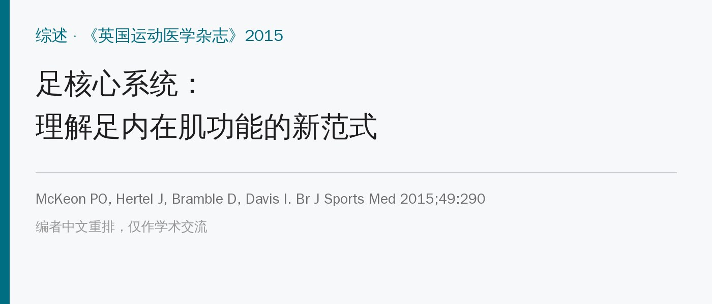
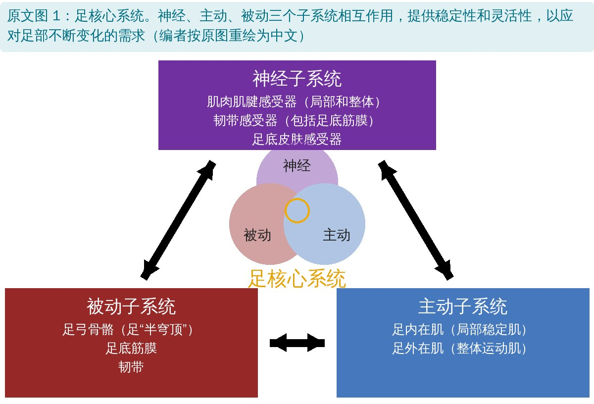
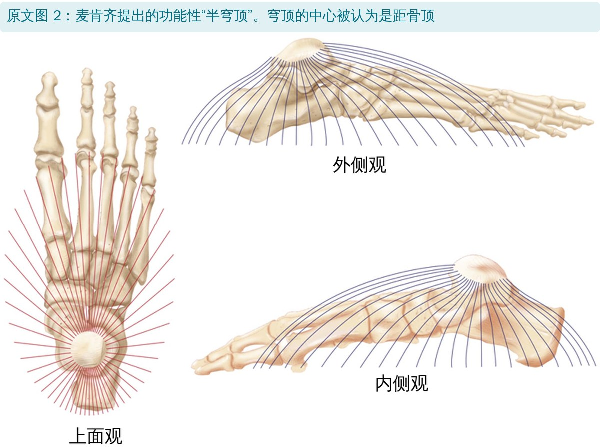
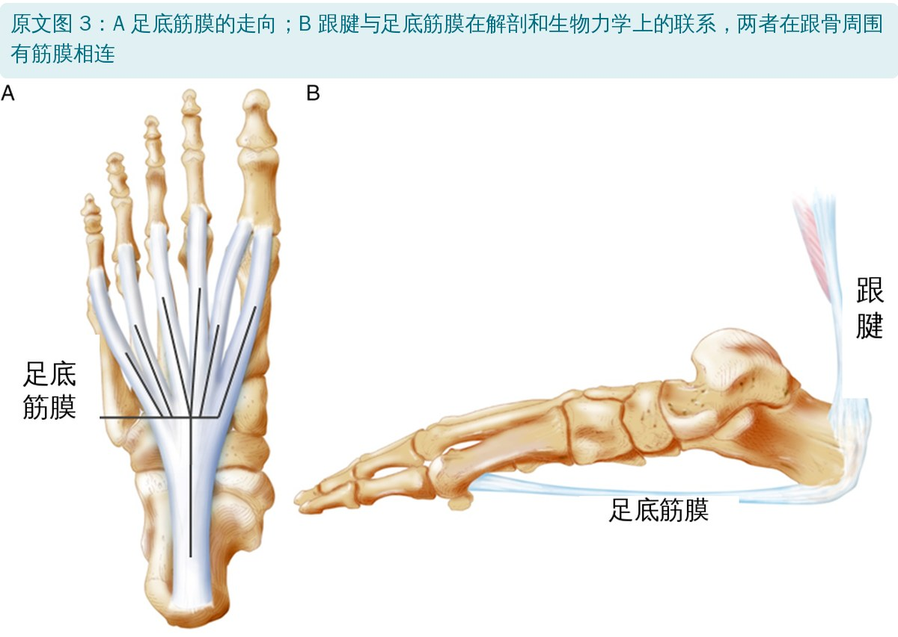
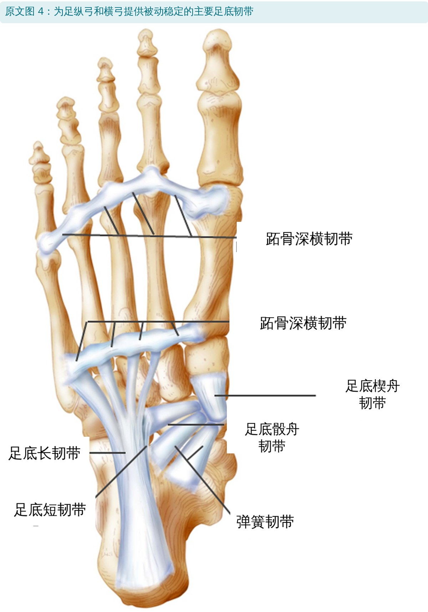
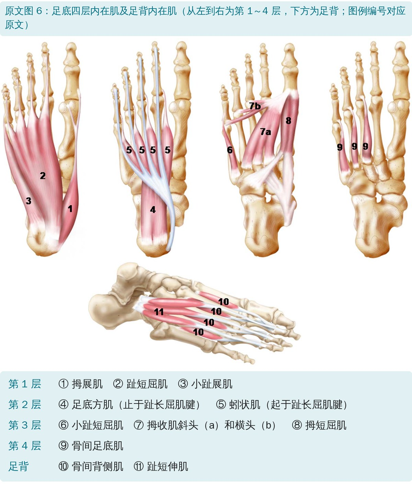
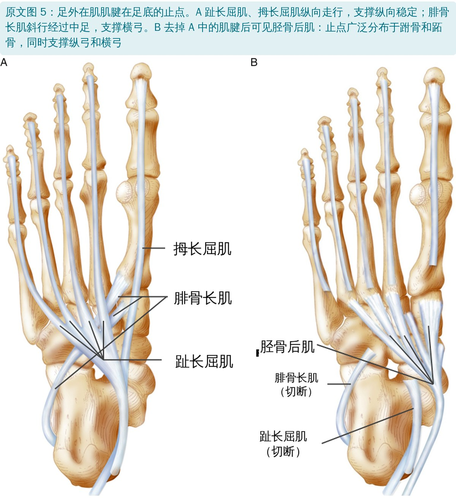
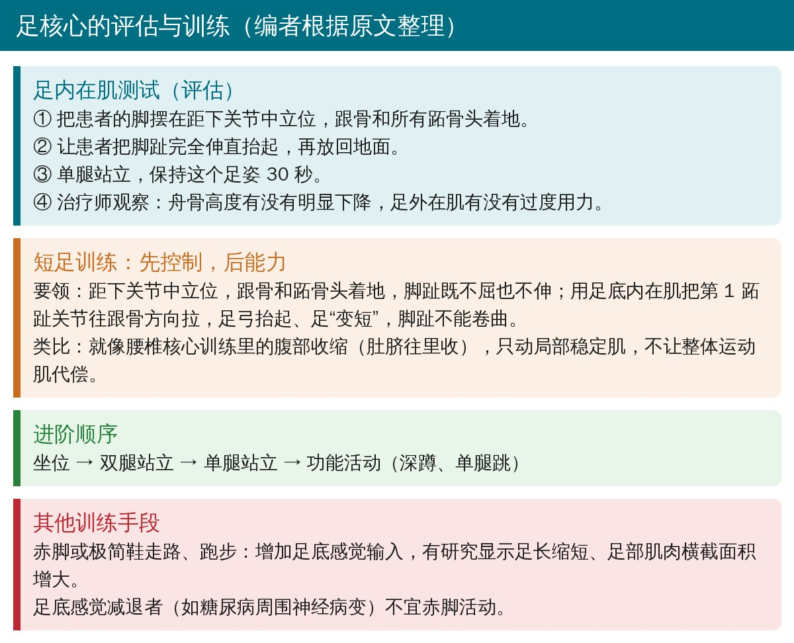
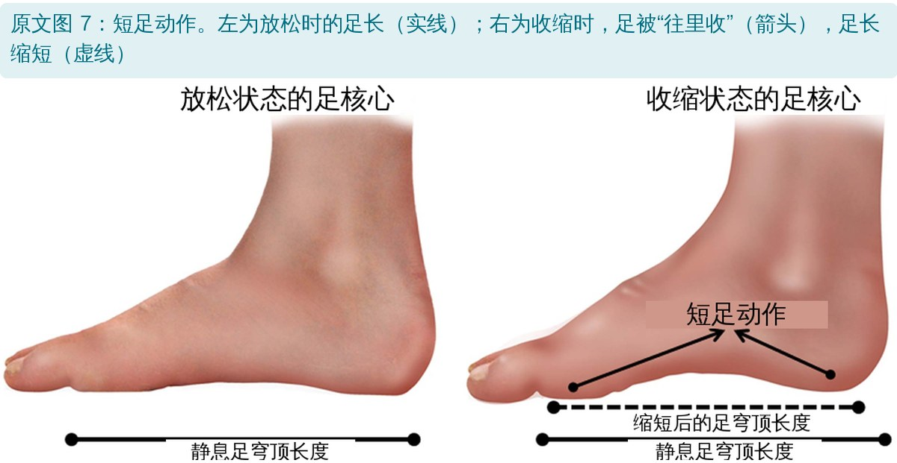

🔖原文信息（编者中文重排）
📚 文献信息
▪ McKeon PO, Hertel J, Bramble D, Davis I. The foot core system: a new paradigm for understanding intrinsic foot muscle function. Br J Sports Med. 2015;49(5):290. doi:10.1136/bjsports-2013-092690
▪ 作者包括足踝研究者 McKeon、Hertel，进化生物学家 Bramble，跑步生物力学专家 Irene Davis
▪ 文章类型：综述 / 理论框架（编辑推荐），提出新概念，不是试验研究
腰椎骨盆的核心稳定大家都很熟：多裂肌、腹横肌这类局部稳定肌横截面小、力臂短，主要负责节段稳定；背阔肌、腹直肌这类整体运动肌负责产生大动作。局部稳定肌不工作，整个“地基”就不稳。
作者认为足弓也是一个“核心”：足底四层内在肌就是足的局部稳定肌，起止点都在足上，力臂小，每走一步都在控制足弓变形的幅度和速度；小腿过来的外在肌则是整体运动肌。可现实是，内在肌几乎被临床和科研忽视，足底筋膜炎、胫骨后肌腱功能障碍、胫骨内侧应力综合征的指南里都没提过足部力量训练，处理方式多是鞋垫这类“外部支撑”。
• 猿的脚适合爬树，走路时中足会“折”（中跗关节断裂）；人足有了内收的大脚趾、变短的外侧趾、紧凑的跗骨和明确的内侧纵弓，后半程能变成刚性杠杆
• 直立行走的南方古猿还没有完整足弓，到早期直立人足结构已基本现代化，作者认为这与耐力跑和长途负重有关
• 跑步靠“腿部弹簧”：跟腱、足底筋膜和弹簧韧带储存、释放弹性能量；但和四足奔跑动物不同，人保留了相当多的足内在肌，因为单腿支撑要主动控制平衡、适应不平地面
• 肌电显示足内在肌在跑步时激活最一致，负重增加时募集更强

🔖原文图 1：足核心系统（中文重绘）
框架借用 Panjabi 的脊柱稳定模型：被动、主动、神经三个子系统相互依存。Hodges 又把核心稳定分成控制（协调）和能力（力量、耐力），这两条原则同样适用于足。

🔖原文图 2：四个足弓合成一个功能性“半穹顶”
足有内、外侧纵弓和前、后横弓，作者主张把它们看成一个半穹顶，以距骨顶为中心，灵活适应负荷变化。

🔖原文图 3：足底筋膜，以及它和跟腱的连接

🔖原文图 4：足底主要韧带

🔖原文图 6：足底四层内在肌和足背内在肌
• 第 1、2 层顺着纵弓排列，第 3、4 层更多对应横弓
• 内在肌的特点（见下表）：支撑足弓、随活动和负荷增加而激活、协同工作、调节足的“平台”和“杠杆”功能
| 功能特点 | 依据 |
|---|---|
| 支撑足弓 | 内在肌功能下降会使足姿态变差；训练内在肌可以改善足姿态 |
| 活动依赖 | 走路等动态活动时，内在肌比静止站立时更活跃 |
| 负荷依赖 | 姿势要求越高（如从双腿站到单腿站），内在肌激活越多 |
| 协同作用 | 内在肌作为一个整体，在步态推进期动态支撑足弓 |
| 调节作用 | 站立时让足成为稳定平台，动态活动时让足成为推动身体的杠杆 |
原文表 1：足内在肌的功能特点及循证描述（中文翻译）

🔖原文图 5：足外在肌肌腱在足底的止点
外在肌通过长肌腱移动足、并调节被动结构。例如小腿三头肌越紧张，足底筋膜张力越大，帮助足在步态中从柔软过渡到刚硬；腓骨长肌斜穿中足撑横弓，胫骨后肌广泛附着撑纵弓和横弓。
• 足底皮肤感觉对步态和平衡至关重要，研究最多
• 作者推测：内在肌力臂太小，不适合产生大动作，更适合通过牵张反应即时感知足弓形变；而且和韧带、皮肤感受器不同，这种感觉可以通过训练调节
• 让内在肌疲劳后，站立时舟骨下降明显增加，作者认为这可能更多是感觉信息改变，而不只是力量下降

🔖足核心的评估与训练（编者根据原文整理）
• 没有金标准。直接法测脚趾屈曲力量（徒手肌力、抓握测力计、足底压力、夹纸测试），但分不开内在肌和外在肌，而且只关注屈趾，忽略了内在肌撑足弓这一更重要的功能
• 足内在肌测试：距下关节中立位，跟骨和跖骨头着地，单腿站 30 秒，看舟骨是否下降、外在肌是否过度用力；初步证据显示能反映康复后的改善，但测量学性质还没验证
• 间接法：表面肌电（拇展肌代表内侧整组内在肌）、超声引导下针电极肌电、磁共振和超声测肌肉体积；例如单侧足底筋膜炎患者患侧前足内在肌总体积更小

🔖原文图 7：短足动作，足弓抬起、足长缩短
• 传统的毛巾抓趾、捡弹珠会大量动用趾长屈肌和拇长屈肌，不够“孤立”
• 短足训练（足穹顶）：用内在肌把第 1 跖趾关节往跟骨方向拉，足弓抬起，脚趾不卷；相当于足的“腹部收缩动作”，是足踝康复的基础动作
• 拇展肌激活在短足训练时比毛巾抓趾高 4 倍以上
• 进阶：坐位 → 双腿站 → 单腿站 → 深蹲、单腿跳等功能活动
• 健康人练 4 周短足：舟骨下降减少、足弓高度指数改善、平衡更好
• 健康人练 4 周短足比毛巾抓趾的动态平衡更好
• 但 4 周平衡训练加不加短足姿势，平衡改善一样
• 扁平足年轻人：短足 + 鞋垫 4 周，比单用鞋垫拇趾屈曲力量和拇展肌横截面积增加更多
• 慢性踝关节不稳：平衡训练中加短足姿势，自评功能改善（初步证据）
• 赤脚走跑 4 个月后，X 线测量的足长缩短（足弓抬高的间接指标）；穿无足弓支撑的鞋训练 5 个月，多块足部肌肉横截面积增加
• 赤脚的另一个好处是足底感觉输入更多：单腿站立赤脚比穿薄袜更稳；单腿落地赤脚 > 极简跑鞋 > 传统跑鞋
• 足底感觉减退者（如糖尿病周围神经病变）不要赤脚活动，而且应在安全环境中进行
作者的结论很鲜明：急性期可以临时支撑，但应尽快换成力量训练，就像身体其他部位受伤后一样；甚至呼吁来一个“足的十年”。
• 这是理论框架，不是试验：类比腰椎核心很有启发性，但足核心模型本身没有经过验证
• 支撑证据多为小样本、短期、健康人：4 周干预、实验室指标，缺少对足底筋膜炎等患者的随机对照试验
• 关键假设仍是推测：内在肌作为“足弓传感器”是作者根据解剖推断的；赤脚训练与减少跑步损伤的关系也还没有证据
• 评估工具不成熟：足内在肌测试缺乏信度、效度数据，作者自己也承认
• 同一篇文献，表里和标题意思相反：表 1 用文献 34 支持“训练内在肌可以改善足姿态”，可文献 34 的标题就是“4 周短足训练影响功能，但不影响力线”
• 图 4 标注重复：中足那条韧带也标成“跖骨深横韧带”，但跖骨深横韧带连接的是跖骨头，图中位置在跖骨底附近，应是另一组韧带
• 图注写错图号：图 5B 的图注说“去掉图 1A 的肌腱”，应为图 5A
• 结论比证据走得远：正文承认平衡训练加不加短足效果一样、很多机制还不清楚，结论却说“显然，更强壮的脚就是更健康的脚”，并主张用力量训练取代鞋垫，但没有直接比较两者的试验
• 用肌肉体积推力量：赤脚训练部分只测了足长和横截面积，用“肌肉大小与力量相关”间接推断力量增加
• 核心概念来源较弱：足核心与腰椎核心的类比“最早由 Jam 提出”，引用的是一篇网页文章，不是同行评议论文
• 小错：“the latter is more important than the former is assessment”中 is 应为 in；参考文献 28 中“Livingtone”应为 Livingstone
• 把足内在肌纳入下肢康复：足底筋膜炎、扁平足、踝关节不稳、跑步损伤，都可以加入短足训练
• 先教会，再加量：先在坐位找到距下中立位和“足变短”的感觉，脚趾不卷、外在肌不代偿，再进阶到站立、单腿和功能动作
• 用足内在肌测试做简单筛查：单腿站 30 秒看舟骨是否塌、脚趾是否抓地
• 鞋垫当拐杖用：急性期可以用，但要配合力量训练，逐步减少依赖
• 赤脚训练循序渐进，感觉减退的人不做
欢迎关注骨科康复小黄公众号，获取更多物理治疗的专业知识！
📄参考文献：
McKeon PO, Hertel J, Bramble D, Davis I. The foot core system: a new paradigm for understanding intrinsic foot muscle function. Br J Sports Med. 2015;49(5):290. doi:10.1136/bjsports-2013-092690
原文版权归 BMJ 出版集团及作者所有，未标注开放许可协议。本文为学术交流用的中文解读：图 2～7 引自原文（英文标注改为中文，图 6 加中文图例），图 1 按原意重绘为中文，表 1 为中文翻译，评估与训练卡为编者整理。版权归原作者与期刊，如有侵权请联系删除。